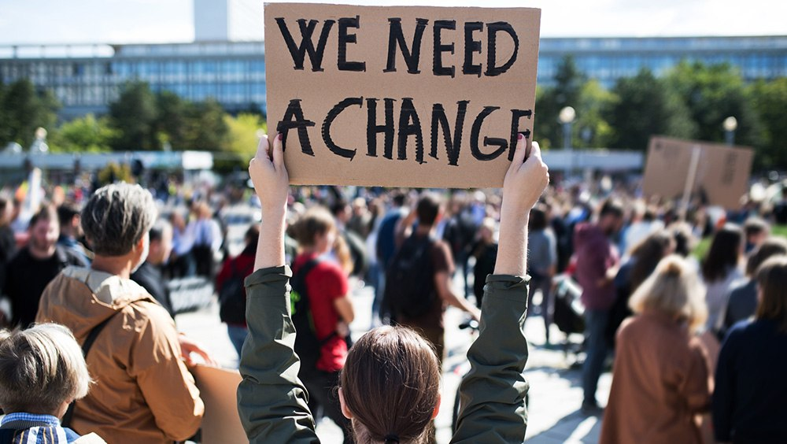
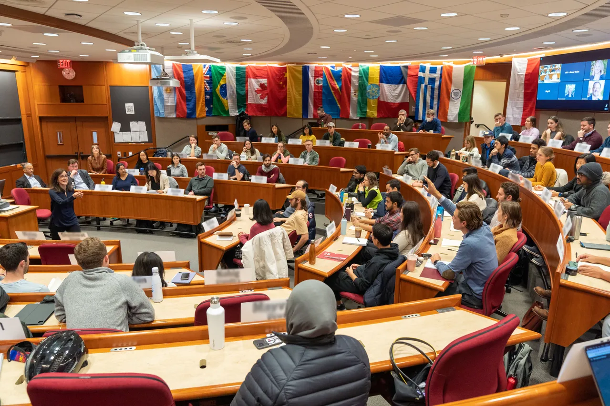
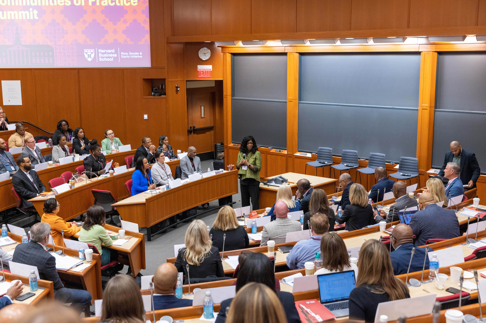

Health
Healthcare financing, pharmaceutical regulation, mental health infrastructure, public health preparedness, and insurance market design.
Explore on the globeInternational Policy Conference
A global policy competition for high school and collegiate students. Bring the questions from your community to a worldwide conversation.
01 / EXPLOREEight policy fields
02 / DEVELOPResearch into recommendations
03 / PRESENTMake your case
Scroll to discover01 / Our mission
The International Policy Conference was established in 2026 by a group of Harvard students and graduates to bring global perspectives to future leaders early in their education.
Open to high school and collegiate students worldwide, IPC asks students to look beyond “what is the problem” and consider why it persists, how to solve it, and who can help change it.
Through economics, international law, public health, environmental science, and more, students develop research, synthesis, public speaking, negotiation, and persuasive communication skills—with the opportunity to get their recommendations to legislators whose votes influence real-world outcomes in their communities.
Find your policy field02 / Choose your question
Healthcare financing, pharmaceutical regulation, mental health infrastructure, public health preparedness, and insurance market design.
Explore on the globeClimate mitigation, carbon pricing, biodiversity regulation, environmental justice, and international climate governance.
Explore on the globe
Tax policy, public expenditure, labor markets, trade policy, income inequality, and macroeconomic stabilization.
Explore on the globe
AI regulation, data privacy, algorithmic accountability, platform governance, cybersecurity, and digital infrastructure.
Explore on the globeSchool funding equity, higher education access, early childhood development, curriculum policy, and teacher workforce.
Explore on the globeForeign policy, arms control, multilateral institutions, humanitarian law, refugee policy, and non-proliferation.
Affordable housing production, zoning and land use, homelessness, urban infrastructure, and community development.
Explore on the globePolicing policy, sentencing reform, juvenile justice, voting rights, civil liberties, and anti-discrimination law.
03 / A world of possibilities
A local question can start
a worldwide conversation.
Six illustrative policy questions. Your perspective could be next. Make your case
04 / The competition
Build the foundation: define a policy problem, investigate its context, and develop a research-backed recommendation.
Translate your research into a concise, rigorous policy brief that makes a compelling case for action.
Bring your proposal to life in a clear and creative pitch for a broad public audience.

Selected finalists present their ideas and take part in an executive question-and-answer session in Boston.
05 / Competition standards
Brief structure, presentation formats, and judging criteria.
| Criterion | Description | Points |
|---|---|---|
| Problem Definition | Clarity and precision; use of quantitative indicators; appropriate scoping | 15 |
| Evidence Quality | Quality, recency, and independence of sources; correct interpretation of causal vs. correlational claims | 25 |
| Analytical Rigor | Depth of stakeholder analysis; quality of options comparison; soundness of trade-off reasoning | 25 |
| Policy Recommendation | Specificity of proposed intervention; feasibility; identification of implementing authority | 20 |
| Counter-Argument Engagement | Substantiveness of objections addressed; quality of responses | 10 |
| Writing and Structure | Clarity, organization, adherence to required structure | 5 |
| Criterion | Description | Points |
|---|---|---|
| Problem Framing | Evidence-grounded introduction within the time allotted | 15 |
| Clarity of Proposal | Precision of the intervention; whether the mechanism of effect is clearly explained | 20 |
| Evidence Presentation | Quality of empirical evidence and effectiveness of communication to a generalist audience | 25 |
| Objection Handling | Credibility and thoroughness of objections addressed | 20 |
| Communication | Clarity, pace, structure, and accessibility of the video as a standalone presentation | 20 |
All finalists must submit a 500-word updated policy summary on Day 2, due by 11:59 PM local time. Required elements: the policy recommendation in one sentence; the three strongest pieces of supporting evidence; the primary implementation challenge; and the proposed metric by which the policy's effectiveness should be evaluated within five years. This document is provided to the executive judges prior to the Day 3 Q&A session.
| Criterion | Description | Points |
|---|---|---|
| Command of Material | Depth of knowledge; ability to cite specific data without notes; familiarity with the literature | 25 |
| Pitch Effectiveness | Clarity, structure, and persuasive coherence of the 12-minute live presentation | 20 |
| Q&A Responsiveness | How directly and substantively each question was addressed | 30 |
| Policy Realism | How implementable and politically viable the proposal appears to working policymakers | 15 |
| Intellectual Honesty | Acknowledgment of limitations; willingness to update positions in response to new information | 10 |
06 / Recognition
Teams advance through six recognition levels. Final placements are determined by composite scores across all judged stages.
Champion team of the session
Top teamRunner-up team of the session
Top 2Third-place team of the session
Top 3Invited to the live finals round
Top 8 teamsStrong performance across stages
Top 15%Commended for quality of work
Top 25%All recognized teams receive a certificate of achievement. Final placements are determined by the committee’s composite score after integrated video and paper adjudication.
07 / Read the work
Explore exemplary policy briefs developed in collaboration with the Harvard Kennedy School's Institute of Politics. These submissions demonstrate the research depth, analytical rigor, and persuasive communication expected at the finals level.
A comprehensive policy proposal addressing the mental healthcare gap in underserved rural regions through telehealth infrastructure investment and provider incentive programs.
A regulatory framework establishing transparency requirements, bias auditing protocols, and oversight mechanisms for artificial intelligence deployed in government decision-making.
Complete competition guidelines, research templates, judging rubrics, and submission instructions will be available at the end of September 2026.
Check back after September 30, 2026
2027 cycle
Sign up for updates to receive the registration announcement first.
Teams investigate a problem and submit a research-backed recommendation.
Selected teams communicate their ideas in a concise recorded pitch.
Finalists present live, take part in executive Q&A, and celebrate their work.
09 / Questions, answered
IPC is open to high school and collegiate students worldwide. Participants may compete as individuals or in teams. Full eligibility requirements will be published with registration for Spring 2027.
Participants (individuals or teams) progress through research, a written policy brief, and a short video pitch. Finalists also prepare for a live presentation and executive question-and-answer session.
Judges assess the quality of research, clarity of the policy recommendation, feasibility, evidence, equity, and the team’s ability to communicate their work persuasively.
Join the IPC mailing list through the contact section to receive the Spring 2027 timeline, eligibility requirements, and participant resources when they are announced.
10 / The people behind IPC
Founder, Co-Chair
Harvard College ‘29
Co-Chair
Harvard College ‘26, University of Oxford ‘28, Harvard Law School ‘31
Building a global network
We are building IPC chapters at leading high schools and universities worldwide. Chapter leaders coordinate local outreach, organize information sessions, and support participants through the competition process.
Applications are reviewed on a rolling basis.
Priority consideration date: Friday, August 21, 2026.